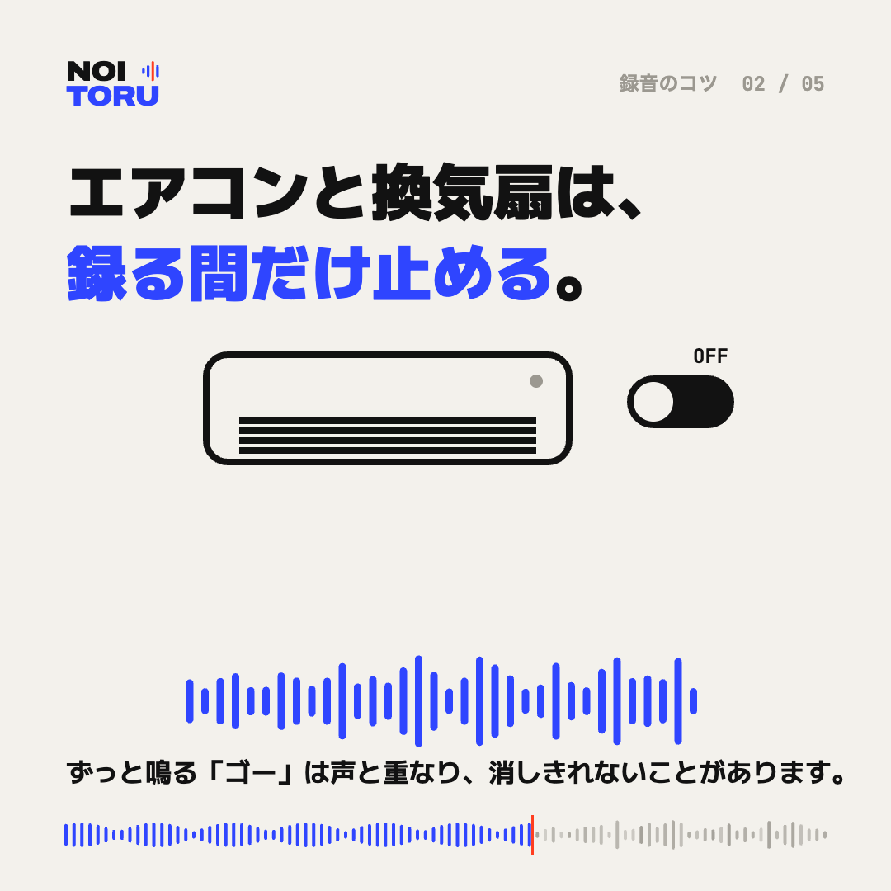

エアコンと換気扇は、録る間だけ止める

「ゴー」という音は、ずっと声と重なる
エアコンや換気扇、空気清浄機の音は、録音のあいだ途切れずに鳴り続けます。この音は声と同じ高さの音も含んでいるため、あとから減らすと、声まで細くなってしまうことがあります。
録る間だけ止めて、終わったら戻す
話す時間だけ止めて、終わったらすぐ戻すだけでも効果があります。暑さや寒さで体調を崩さない範囲で行ってください。止められない場合は、吹き出し口から録音機を離し、風が直接当たらない場所に置きます。
ほかにも鳴り続けている音
冷蔵庫、パソコンのファン、水槽のポンプなども、録音にははっきり入ります。録り始める前に一度、部屋の音に耳を澄ませてみてください。
止められなかった録音は
止められずに録った録音でも、雑音を減らして聞きやすくすることはできます。ただし、雑音が声と同じくらい大きい箇所は、良くなる程度が小さくなります。